АРКИ СРЕДИ НАС
Этот креативный проект был командной работой, посвященный аркам в Гагаринском районе и представляет нашу интерпретацию того, что они собой представляют.
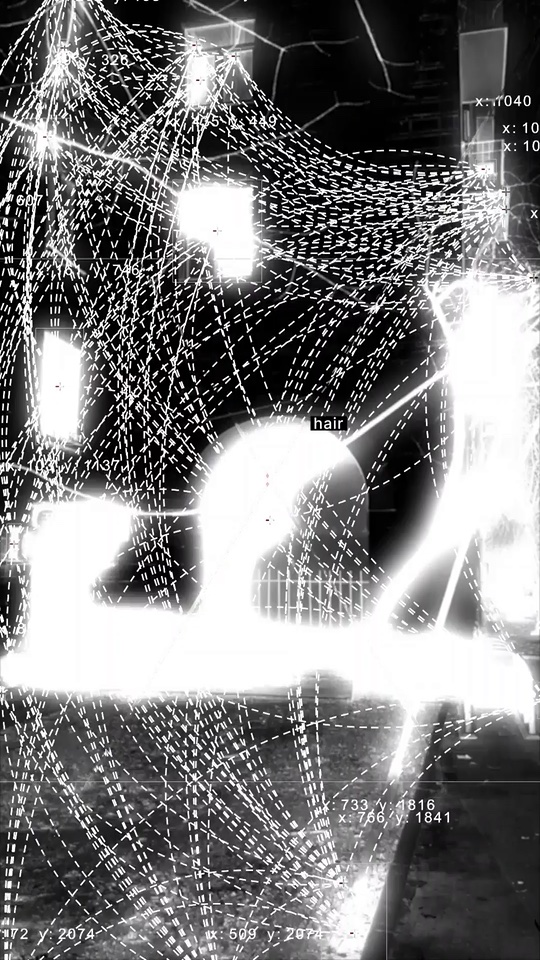
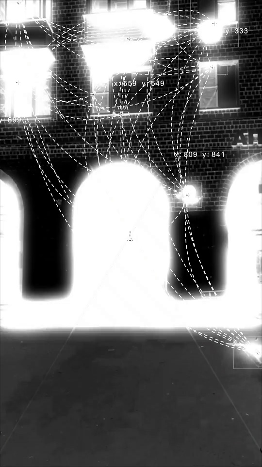

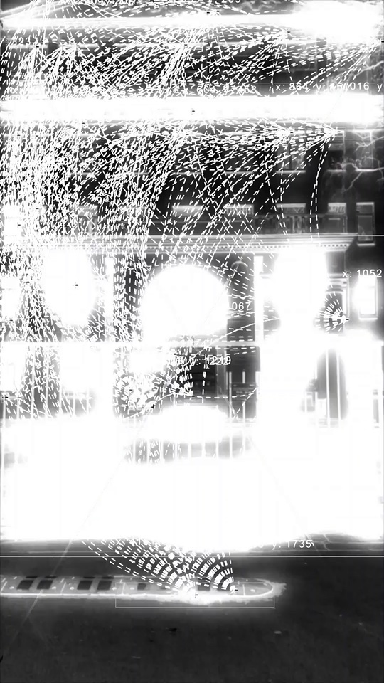
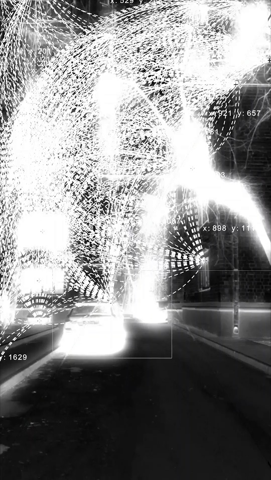
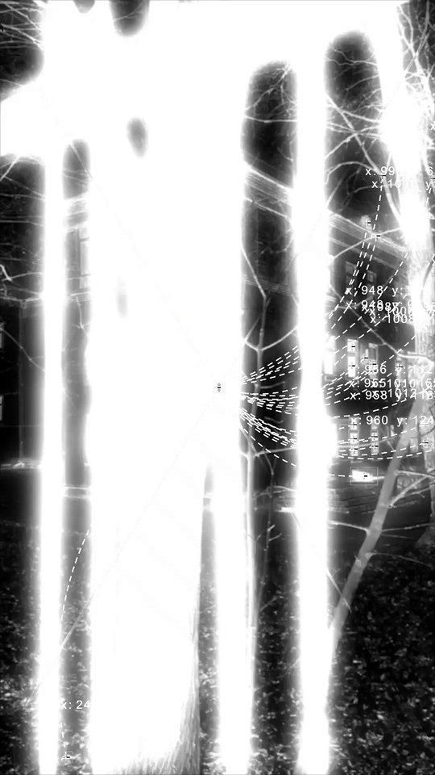
Вместо того, чтобы показывать арки только как архитектурные элементы, я попытался увидеть в них что-то более живое, с их собственным внутренним характером. Основная идея проекта основана на контрасте между внешним и внутренним пространством. Снаружи арка выглядит как простая и привычная конструкция. Люди проходят через нее, не задумываясь об этом. Это просто часть окружающей среды. Но я хотела представить, что за этой видимой поверхностью что-то скрыто.
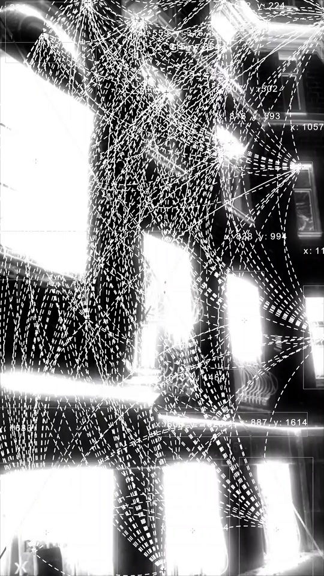
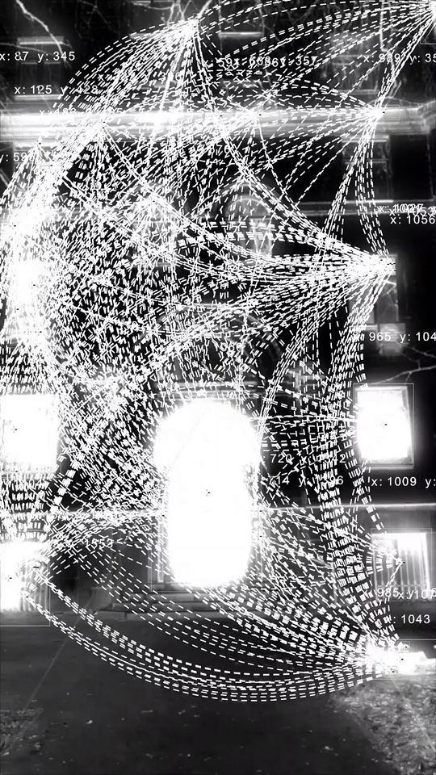

В моей интерпретации, каждая арка имеет свой собственный внутренний мир, сформированный людьми, которые живут поблизости или проходят через нее каждый день.
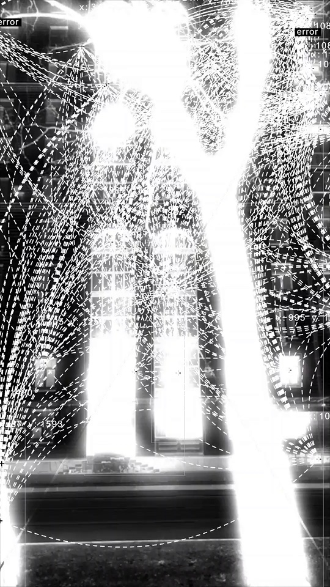
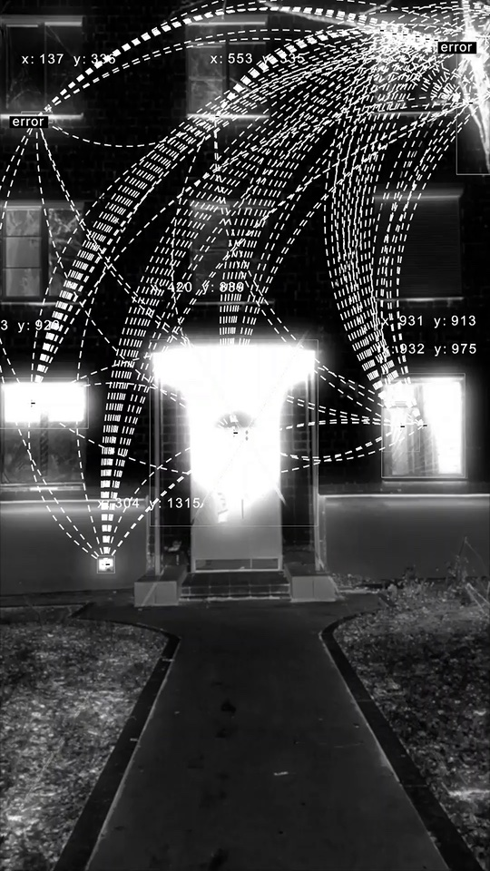

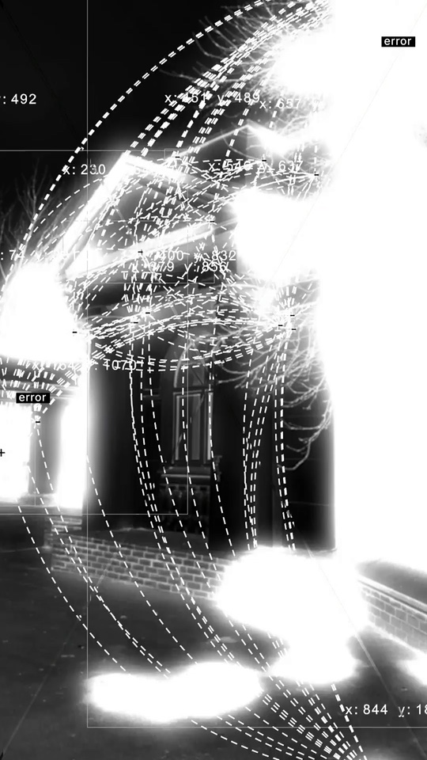
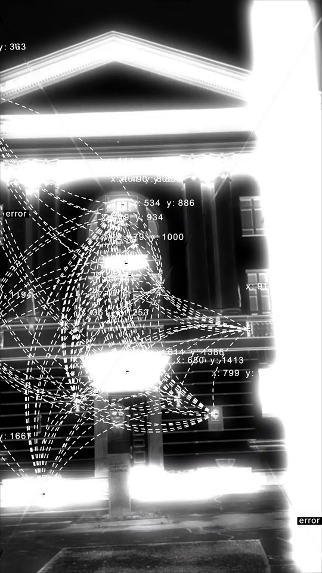
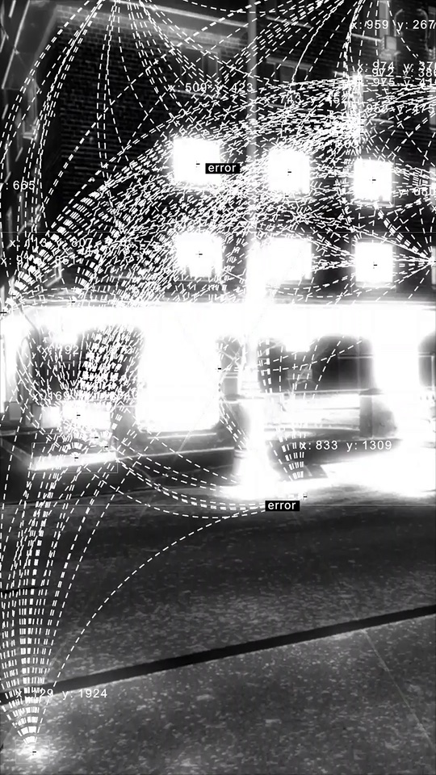